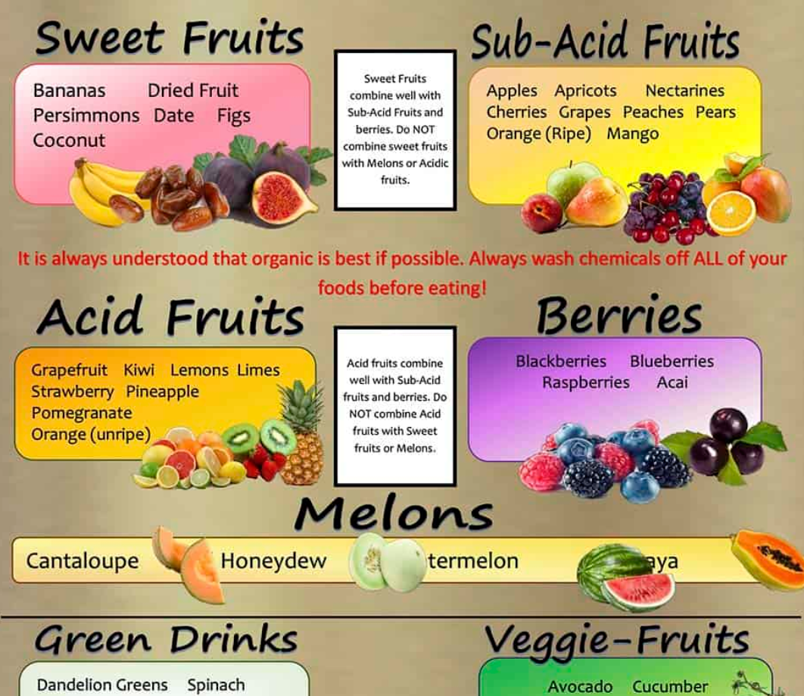
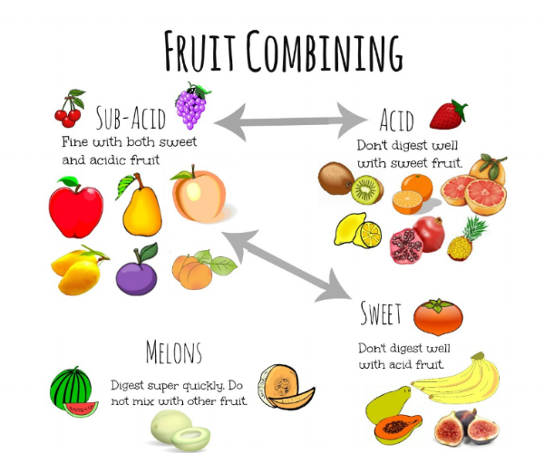
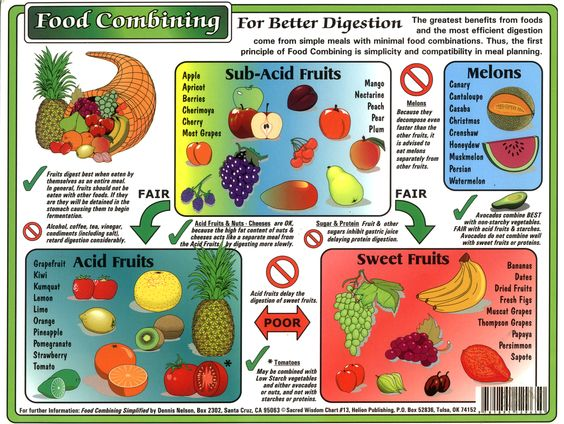

International Food Combining Guidelines
Properly combining foods can enhance digestion, reduce bloating, and increase nutrient absorption. These principles apply across cultures and dietary habits to support healthy, mindful eating.
1. Limit Grains to Once a Day
Grains, like rice, wheat, and quinoa, require more time and energy to digest. Limiting grains to one meal per day can reduce the risk of undigested food accumulating in the digestive system.
Challenging Combinations
• Grains at multiple meals (e.g., rice for lunch and bread for dinner)
Digestible Combinations
• Fruit for breakfast, salad for lunch, grains and vegetables for dinner
People with high energy needs, such as athletes, may need more grains. Adjust based on your lifestyle.
2. Eat Only One Grain Type at a Time
Combining multiple grains (like rice and bread) in one meal can be harder on digestion. Stick to one type of grain per meal for better absorption.
Challenging Combinations
• Rice with bread
• Lentils with rice and bread
Digestible Combinations
• Brown rice with vegetables
• Quinoa with leafy greens
3. Combine Grains with Triple the Amount of Vegetables
Grains are easier to digest when paired with a large portion of vegetables. A 1:3 ratio of grains to vegetables is ideal for balanced digestion.
Challenging Combinations
• Multiple grains with only one portion of vegetables
Digestible Combinations
• Rice with mixed vegetables
• Quinoa with a large vegetable salad
4. Avoid Eating Fruits and Cooked Foods Together
Fruits and cooked foods require different enzymes for digestion. To avoid bloating and discomfort, consume fruits alone or with neutral vegetables.
Challenging Combinations
• Fruits with cooked vegetables
• Fruits with grains
Digestible Combinations
• Fruits alone
• Fruits with neutral green vegetables (like cucumber or lettuce)
5. Avoid Mixing Sweet Fruits with Citrus Fruits
Sweet fruits like bananas and mangoes should not be mixed with acidic fruits like oranges or pineapples. Different digestive processes are required for each, making it harder for the body to handle both together.
Digestible Combinations
• Only melons (watermelon, cantaloupe)
• Apples with pears
• Oranges with mandarins
Heavier fruits like bananas, coconut, and avocado may require more time to digest.



6. Don’t Drink While Eating
Drinking liquids while eating can dilute digestive enzymes. Drink water at least 30 minutes before a meal or 1 hour after to support digestion.
If you feel the need to drink during a meal, take small sips and let the water stay in your mouth before swallowing. This practice can ease thirst without hindering digestion.
Did You Know?
- Many traditional diets across cultures combine simple foods to support digestion.
- A typical "celebration meal" in many cultures can include over 100 ingredients!